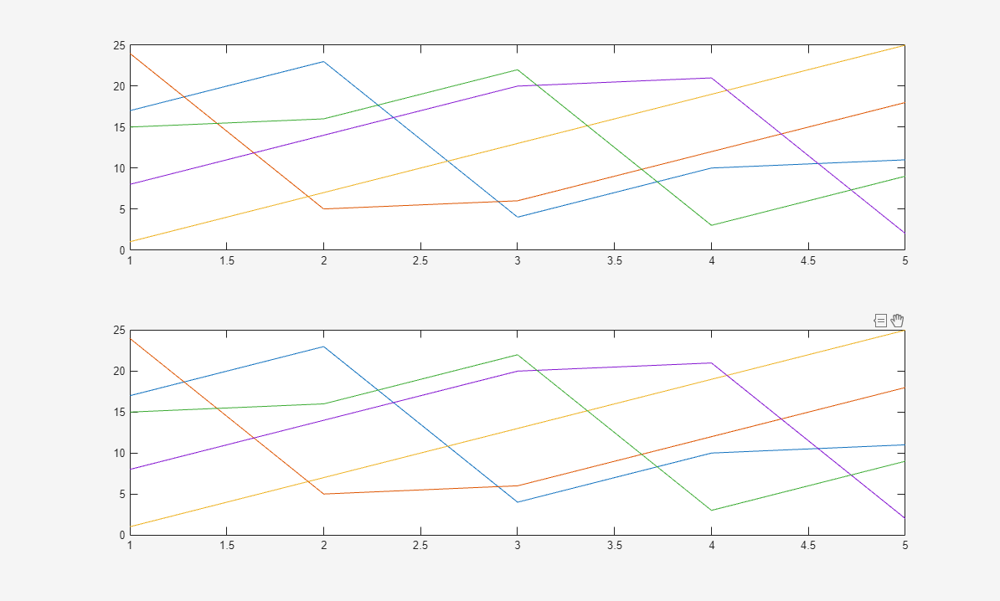
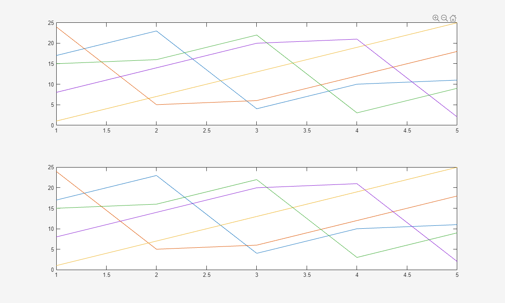

axtoolbar
Create axes toolbar
Syntax
Description
tb = axtoolbar(buttons)axtoolbar({'pan','restoreview'}) specifies a button to pan and a
button to restore the original view. The function returns the AxesToolbar
object created.
tb = axtoolbar
tb = axtoolbar(___,Name,Value)
Examples
Create a plot. Replace the standard axes toolbar with a custom
toolbar that includes buttons to zoom in, zoom out, and restore the view. Return the
AxesToolbar object and the button objects created as output
arguments.
plot(magic(5))
[tb,btns] = axtoolbar({'zoomin','zoomout','restoreview'});

Create two subplots with a custom toolbar for each one.
First, create two subplots and assign the Axes objects to the
variables ax1 and ax2. Replace the toolbar for the
upper subplot with a custom toolbar by specifying ax1 as the first
input argument to the axtoolbar function. Then, replace the toolbar
for the lower subplot. Hover over each subplot to see its toolbar.
ax1 = subplot(2,1,1);
plot(ax1,magic(5))
[tb1,btns1] = axtoolbar(ax1,{'zoomin','zoomout','restoreview'});
ax2 = subplot(2,1,2);
plot(ax2,magic(5))
[tb2,btns2] = axtoolbar(ax2,{'pan','datacursor'});

Create a tiled chart layout with one axes toolbar.
First, create a 2-by-1 layout and display a different chart in each tile. Then, create a custom axes toolbar for the tiled chart layout. Display the toolbar by hovering over the layout.
t = tiledlayout(2,1);
nexttile
plot(magic(5));
nexttile
plot(magic(5));
tb = axtoolbar(t,{'zoomin','zoomout','restoreview'});

Input Arguments
Target axes, specified as one of the following:
Axesobject – Create a custom axes toolbar for the specified set of axes.TiledChartLayoutobject – Create a single axes toolbar that applies to all axes in the specified tiled chart layout.
Toolbar buttons, specified as 'default' for the default set of
buttons or a cell array containing one or more button names listed in this table. The
buttons appear in a standard order on the toolbar regardless of the order in which you
specify them. Each button can appear only once in the toolbar.
| Button Name | Icon | Description |
|---|---|---|
'export' | Display menu of export options. | |
'brush' | Toggle data brushing mode. | |
'datacursor' | Toggle data cursor mode. | |
'rotate' | Toggle rotate mode. | |
'pan' | Toggle pan mode. | |
'zoomin' | Toggle zoom-in mode. | |
'zoomout' | Toggle zoom-out mode. | |
'restoreview' | Restore original view of axes or tiled chart layout. |
Hovering over the 'export' button reveals a drop-down menu with
options for exporting the axes or tiled chart layout content:
 : Save the content as a tightly cropped image or
PDF.
: Save the content as a tightly cropped image or
PDF. : Copy the content as an image.
: Copy the content as an image. : Copy the content as a vector graphic.
: Copy the content as a vector graphic.
Example: axtoolbar({'zoomin','zoomout','restoreview'})
Name-Value Arguments
Output Arguments
Version History
Introduced in R2018b